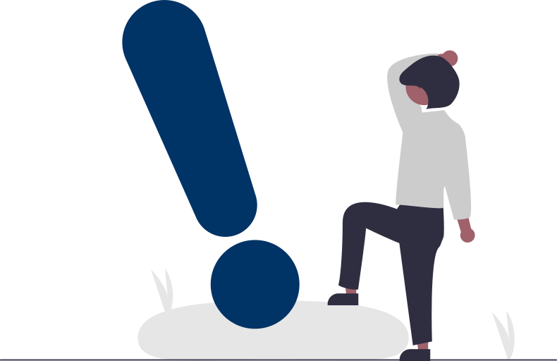

<mat-toolbar>
  <button mat-icon-button *ngIf="sidenav.mode === 'over'" (click) = "sidenav.toggle()">
    <mat-icon *ngIf="!sidenav.opened">
      menu
    </mat-icon>
    <mat-icon *ngIf="sidenav.opened">
      close
    </mat-icon>
  </button>
  <div class="container-fluid">
    <div class="d-flex justify-content-between">
      <div class="row">
        <div>
          
        </div>
      </div>
      <div class="row">
        <div class="d-flex justify-content-between">
          <div class="row chipBtnDiv">
            <div class="d-flex justify-content-between">
              <div class="row firstChip" *ngIf="userHaveSecAns == false">
                <mat-chip-listbox>
                  <mat-chip (click)="openSetSecQuestDialog('600ms', '300ms')">
                    
                    Set Your Security Answer
                  </mat-chip>
                </mat-chip-listbox>
              </div>
              <div class="row secondChip" *ngIf="userHavePin == false">
                <mat-chip-listbox>
                  <mat-chip (click)="openSetPinDialog('600ms', '300ms')">
                    
                    Set Your Pin
                  </mat-chip>
                </mat-chip-listbox>
              </div>
            </div>
          </div>
          <div class="row lastDiv">
            <div class="d-flex justify-content-between">
              <div class="notificationDiv">
                <button type="button" class="btn btn-primary notificationColour" (click)="openNotifyDialog('600ms', '300ms')">
                  <mat-icon class="ico">notifications</mat-icon><span class="badge bg-danger spanBadge">{{noOfNotifications}}</span>
                </button>
              </div>
              <div *ngIf="userHaveImage == true">
                <a class="linkToTxn" routerLink="/dashboard/profile">
                  
                </a>
              </div>
              <div *ngIf="userHaveImage == false">
                <a class="linkToTxn" routerLink="/dashboard/profile">
                  
                </a>
              </div>
            </div>
          </div>
        </div>
      </div>
    </div>
  </div>
</mat-toolbar>

<mat-sidenav-container>
  <mat-sidenav #sidenav>
    <button mat-button class="menu-button" routerLink="minidashboard">
      <mat-icon class="ico">home</mat-icon>
      <span>Dashboard</span>
    </button>
    <button mat-button class="menu-button mBB" routerLink="sendmoney">
      <mat-icon class="ico">money</mat-icon>
      <span>Send Money</span>
    </button>
    <button mat-button class="menu-button mBB" routerLink="fundaccount">
      <mat-icon class="ico">payment</mat-icon>
      <span>Fund Account</span>
    </button>
    <button mat-button class="menu-button mBB" routerLink="findcontact">
      <mat-icon class="ico">search</mat-icon>
      <span>Find Contact</span>
    </button>
    <button mat-button class="menu-button mBB" routerLink="transactions">
      <mat-icon class="ico">list</mat-icon>
      <span>Transactions</span>
    </button>
    <button mat-button class="menu-button mBB" routerLink="notifications">
      <mat-icon class="ico">notifications</mat-icon>
      <span>Notifications</span>
    </button>
    <button mat-button class="menu-button mBB" routerLink="account">
      <mat-icon class="ico">account_balance</mat-icon>
      <span>Account</span>
    </button>
    <button mat-button class="menu-button mBB" routerLink="profile">
      <mat-icon class="ico">account_circle</mat-icon>
      <span>Profile</span>
    </button>
    <mat-divider></mat-divider>
    <button mat-button class="menu-button" (click)="openLogoutDialog('600ms', '300ms')">
      <mat-icon class="ico">power_settings_new</mat-icon>
      <span>Log Out</span>
    </button>
  </mat-sidenav>
  <mat-sidenav-content>
    <div class="content mat-elevation-z8">
      <router-outlet></router-outlet>
      <button mat-button class="myButton" (click)="openChatDialog('600ms', '300ms')">
        <mat-icon class="ico">perm_phone_msg</mat-icon>
        <span>Help</span><span class="badge bg-danger chatB">{{chatCount}}</span>
      </button>
    </div>
  </mat-sidenav-content>
</mat-sidenav-container>


